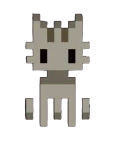
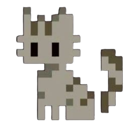
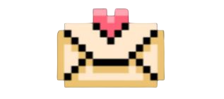

Caro mario,
Se stai leggendo, significa che alla fine sono stata abbastanza brava da programmare questo sito e in tre anni e mezzo che ti conosco ho appreso qualcosa delle conoscenze informatiche che ho sempre ammirato in te. Questa non è nulla se non una lettera per il tuo compleanno, ma trovavo noiosa l’idea di scrivertene una a mano e ho pensato che sarebbe stata più facile fartela arrivare così per poi leggerla ogni volta che vuoi.
Non l’ho fatta con qualche doppio fine, semplicemente sai quanto tengo ai compleanni ma soprattutto quanto tengo a te, ti ho visto passare tante cose in questi anni, ti ho ascoltato mentre mi parlavi dei tuoi sogni e tutto ciò che avresti voluto fare una volta raggiunta quest’età, e volevo in qualche modo farti gli auguri ma anche farti sentire la mia vicinanza nonostante le circostanze non lo permettono più. Cerco di non perdermi troppo in questi pensieri, perché ti ho vissuto, ti ho ascoltato, amarti e viverti è stata una delle esperienze più intense e preziose della mia vita. Alla fine è passato poco da quando abbiamo smesso di parlare. Eppure quando non ci sei il tempo scorre velocissimo, mentre nei giorni in cui ci ritroviamo sembra quasi fermarsi. Proprio come quando ti passo accanto, non ci salutiamo, e penso solo al bene che voglio a quello che ormai è un “apparente sconosciuto”.
Ti amerò sempre perché siamo cresciuti insieme e mi hai aiutata, più di chiunque altro a diventare la persona che sono ora, anche nelle difficoltà. Volevo solo che sapessi che ci sarà sempre una parte di te dentro di me, e per questo ti sono grata. In ogni caso, spero che tu stia raggiungendo tutti i traguardi di cui mi hai sempre parlato, non essere troppo duro con te stesso. Raggiunti i 18 anni ti si aprono tante strade ed io non posso che augurarti il meglio. Qualunque persona tu diventi, e ovunque tu sia nel mondo, ti mando il mio amore.
Magari un giorno ti risentirò raccontarmi spensieratamente tutto ciò che è successo, ma se non dovesse essere in questa vita, ti aspetterò nella prossima, magari a mare, perché mi ricordo quanto ti piace guardarlo.
Buona fortuna e con tanto amore.